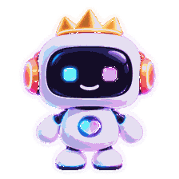

Spoon LIVE 配信サポート
配信中に迷ったら、
次の一手だけ出します。
話題切れ・初見対応・沈黙・参加企画を、配信者の代わりに整理します。

現在はデモモード
Spoon API連携前でも、コメント→秘書の提案→企画実行まで試せます。
まずはこれだけ3 STEP
- 1
枠の雰囲気を選ぶ提案する話題の方向を合わせます
- 2
配信アシストを開始デモでは視聴者コメントを自分で入力できます
- 3
秘書の提案を「使う」勝手に喋らず、配信者が確認してから送ります
今日の枠雑談
① コメントを見る
② 提案を確認
③ 使う

秘書の提案今は見守っています
待機
今やること
まだ何もしなくてOK
コメントが来るか、沈黙が続いた時にここへ提案を出します。
デモ用：視聴者コメントを入れる本番では自動取得
使いたいカードを選ぶだけ。配信中ならそのまま使えます。
まだ履歴がありません
デモを1回使うと、よく使うカテゴリや最近のカードがここに残ります。